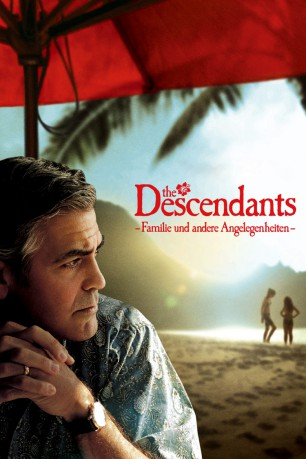

#772 The Descendants - Familie und andere Angelegenheiten
Alternativ: The Descendants
Auszeichnungen: 1 Oscars gewonnen für 4 Oscars nominiert 2 GoldenGlobes gewonnen
 
 IMDB-Wertung: 7.3 / 10
IMDB-Wertung: 7.3 / 10  Metascore: 84
Metascore: 84 
The Descendants, das sind die Nachfahren der Könige und Missionare, die einst in dem paradiesischen Anwesen auf Hawaii lebten, das jetzt von Matt King verwaltet wird. Sein Leben ist ruhig und schön und der finanziell einträgliche Verkauf des Anwesens steht kurz bevor. Als seine Frau nach einem Unfall im Koma liegt, erfährt Matt von seiner 17-jährigen Tochter Alexandra, dass seine Frau eine Affäre mit einem anderen Mann hatte. Zusammen mit Alexandras Freund Sid und ihrer Schwester Scottie, macht sich Matt auf die Suche nach dem unbekannten Liebhaber. Die Reise der ungleichen Truppe ist die ideale Gelegenheit, sich endlich richtig kennen zu lernen…
Jahr: 2011
Dauer: 115 Minuten
FSK: 12
Land: USA Studio: Fox Searchlight PicturesTonspuren: DTS - ,
Untertitel:
Auflösung: 1080p (1920x800) Größe: 7895 MB
Genre: Komödie, Drama
Regisseur:  Alexander Payne
Alexander Payne
Drehbuch: Alexander Payne, Nat Faxon, Jim Rash, Kaui Hart Hemmings
Soundtrack: Jeff Peterson
Darsteller:
 George Clooney als Matt King
George Clooney als Matt King Shailene Woodley als Alexandra King
Shailene Woodley als Alexandra King- Amara Miller als Scottie King
- Nick Krause als Sid
- Patricia Hastie als Elizabeth King
- Kim Gennaula als School Counselor
- Kaui Hart Hemmings als Matt's Secretary Noe
 Beau Bridges als Cousin Hugh
Beau Bridges als Cousin Hugh Matt Corboy als Cousin Ralph
Matt Corboy als Cousin Ralph Michael Ontkean als Cousin Milo
Michael Ontkean als Cousin Milo- Tom McTigue als Cousin Dave
 Mary Birdsong als Kai Mitchell
Mary Birdsong als Kai Mitchell Rob Huebel als Mark Mitchell
Rob Huebel als Mark Mitchell- Laird John Hamilton als Troy Cook
 Robert Forster als Scott Thorson
Robert Forster als Scott Thorson- Celia Kenney als Reina
 Matthew Lillard als Brian Speer
Matthew Lillard als Brian Speer Judy Greer als Julie Speer
Judy Greer als Julie Speer Scott Michael Morgan als Barry Thorson
Scott Michael Morgan als Barry Thorson Fileena Bahris als Passenger , uncredited
Fileena Bahris als Passenger , uncredited Paul Edney als Bicyclist , uncredited
Paul Edney als Bicyclist , uncredited- Tom Holowach als King cousin , uncredited
- Dane Justman als Drunk Guy #2 , uncredited
 Jordan Kirkwood als Troys Roaddog , uncredited
Jordan Kirkwood als Troys Roaddog , uncredited- John A Weaver als King Cousin , uncredited
- Grace A. Cruz als Scottie's Teacher
- Karen Kuioka Hironaga als Barb Higgins
- Carmen Kaichi als Lani Higgins
- Matt Esecson als Cousin Hal
- Stanton Johnston als Cousin Stan
- Jon McManus als Cousin Six
- Hugh Foster als Cousin Wink
- Tiare R. Finney als Cousin Connie
 Milt Kogan als Dr. Johnston
Milt Kogan als Dr. Johnston- Aileen 'Boo' Arnold als Dorm Supervisor
- Esther Kang als Alex's Roommate
- Melissa Kim als Alex's Drunken Friend
- Barbara L. Southern als Alice 'Tutu' Thorson
- Matt Reese als Buzz
- Zoel Turnbull als Hotel Clerk
- Linda Rose Herman als Grief Counselor
- Darryl K. Gonzales als Tahiti Nui Singer, Kanak Attack
- Koko Kanealii als Tahiti Nui Singer, Kanak Attack
- Romey 'Keola' Yokotake als Tahiti Nui Singer, Kanak Attack
- Alan Seabock als Party Guest , uncredited
- Larry Wegger als Airline Passenger , uncredited
Datei: X:\2011(A-F)\Descendants - Familie und andere Angelegenheiten, The (2011, FSK12, 1920x800).mkv seit 23.03.2015
Festplatte: HD 2010(G-Z)-2011(A-F)
 Es gibt insgesamt 86 Filme in der Gruppe '2011(A-F)'
Es gibt insgesamt 86 Filme in der Gruppe '2011(A-F)'